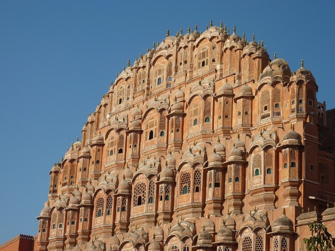
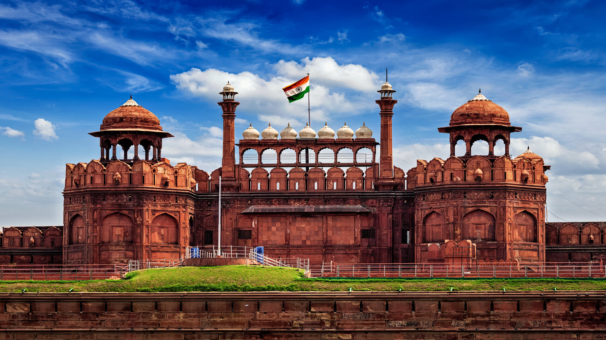
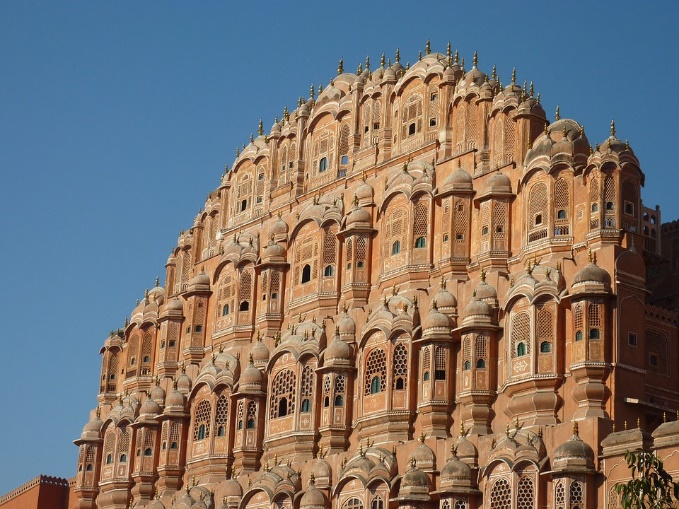
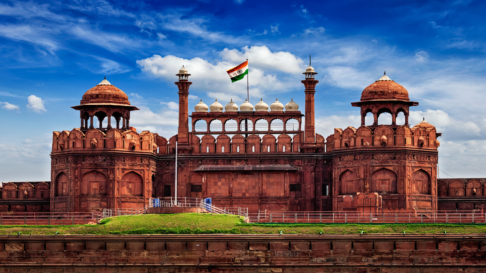

Welcome to Travel India
Our country is very beautiful and one of the biggest tourist Places in the world. India is very high in its culture and lots of variations can be seen after every distance of 5 km as people of different castes and religions live here.They speak different languages. INDIA is divided into 28 states. and 7 union territories. It has many worth visiting places.The Government has taken intiative to develop these places and made for Tourists attraction.
 


